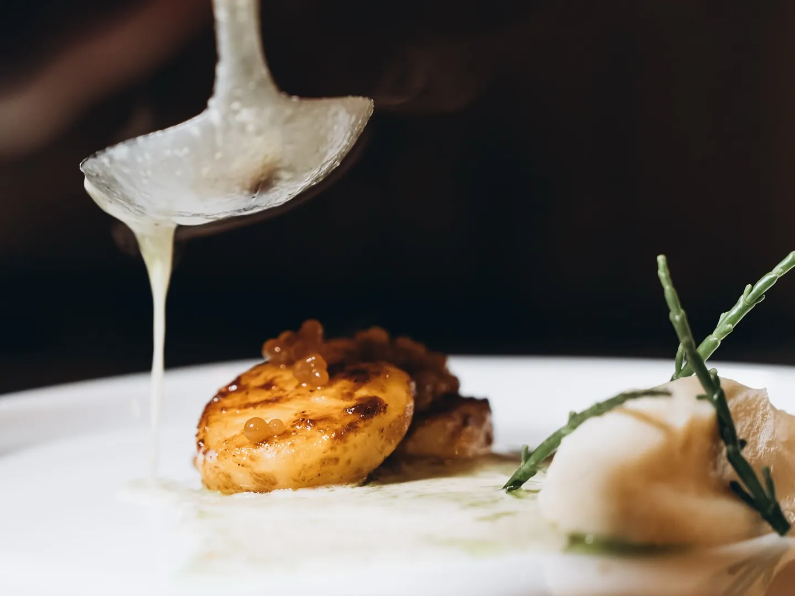
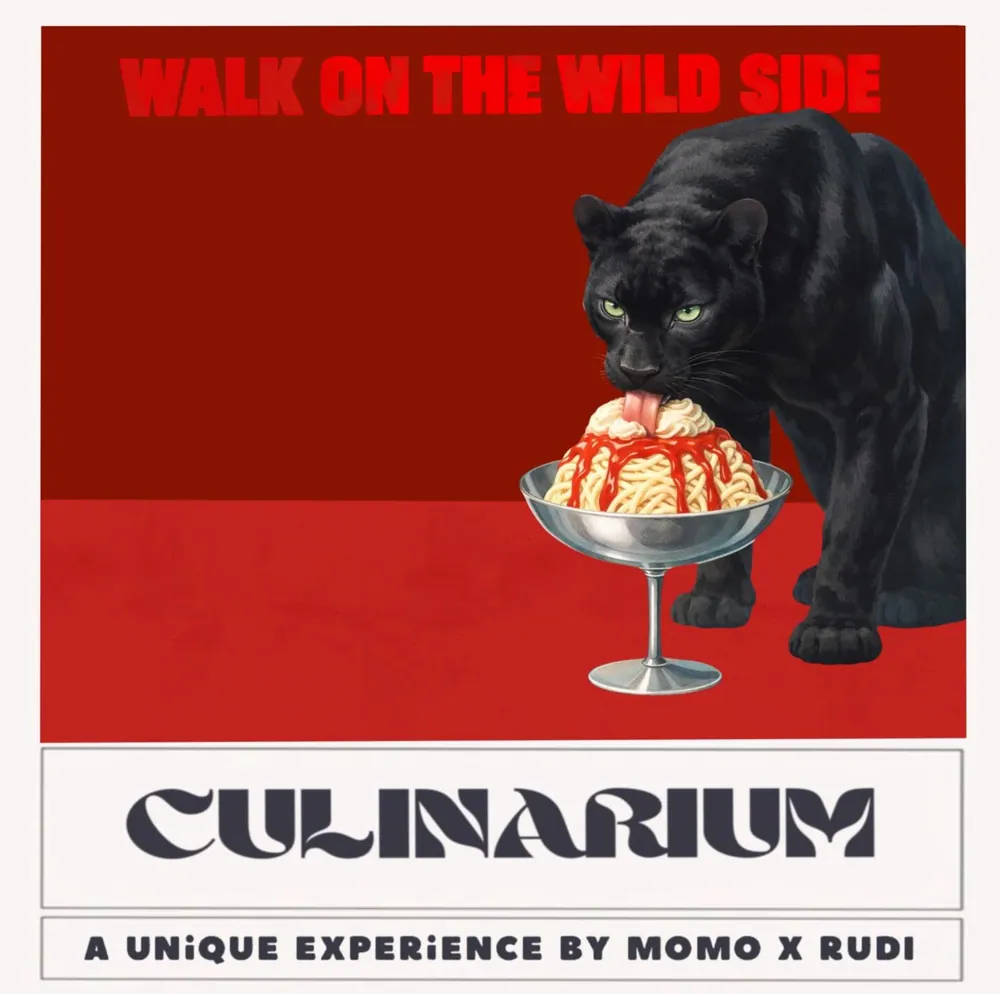
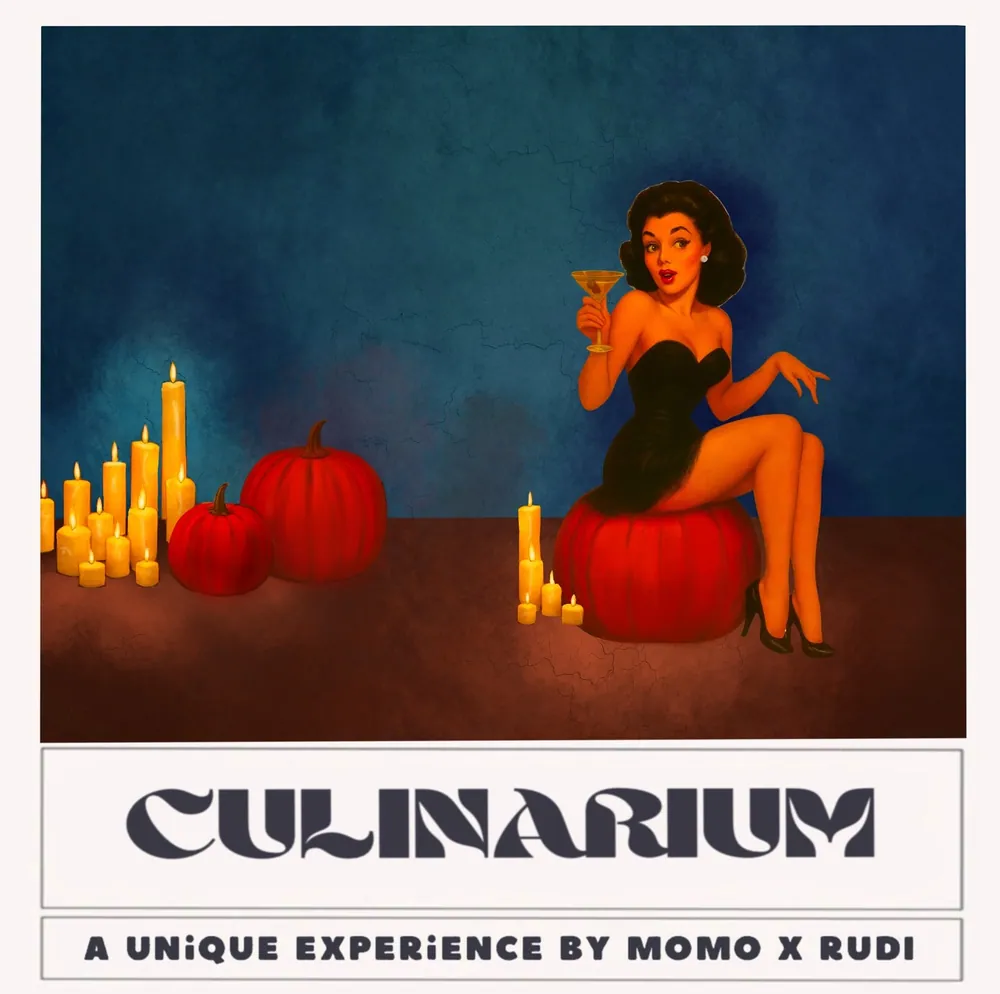
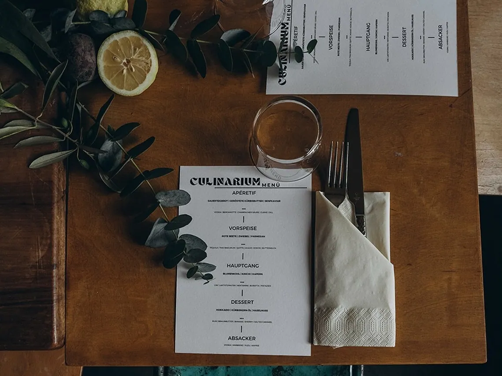
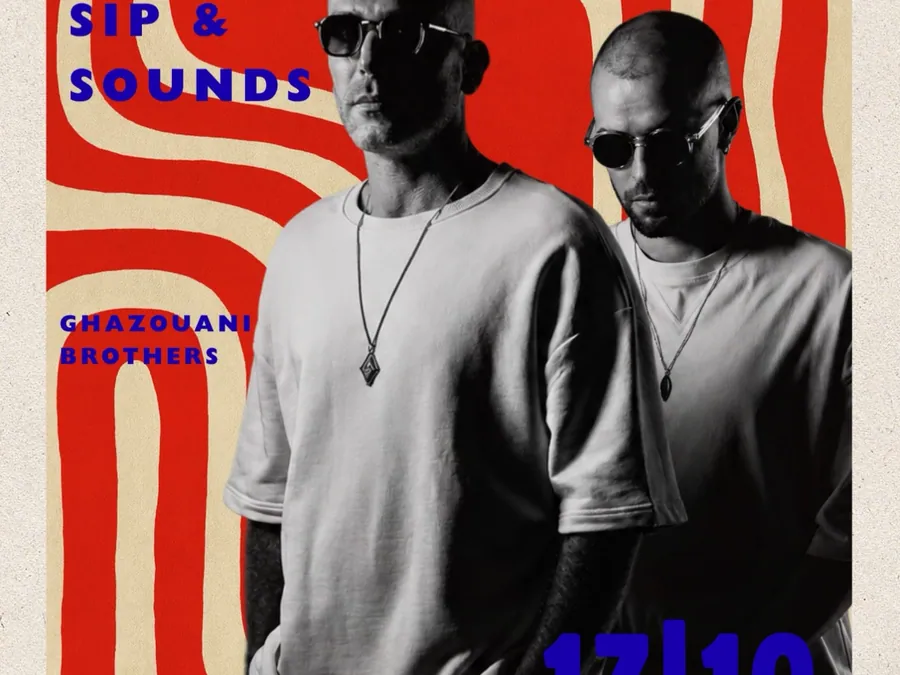
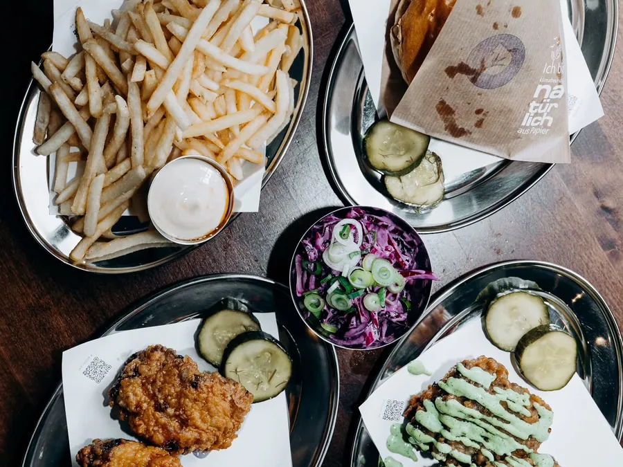
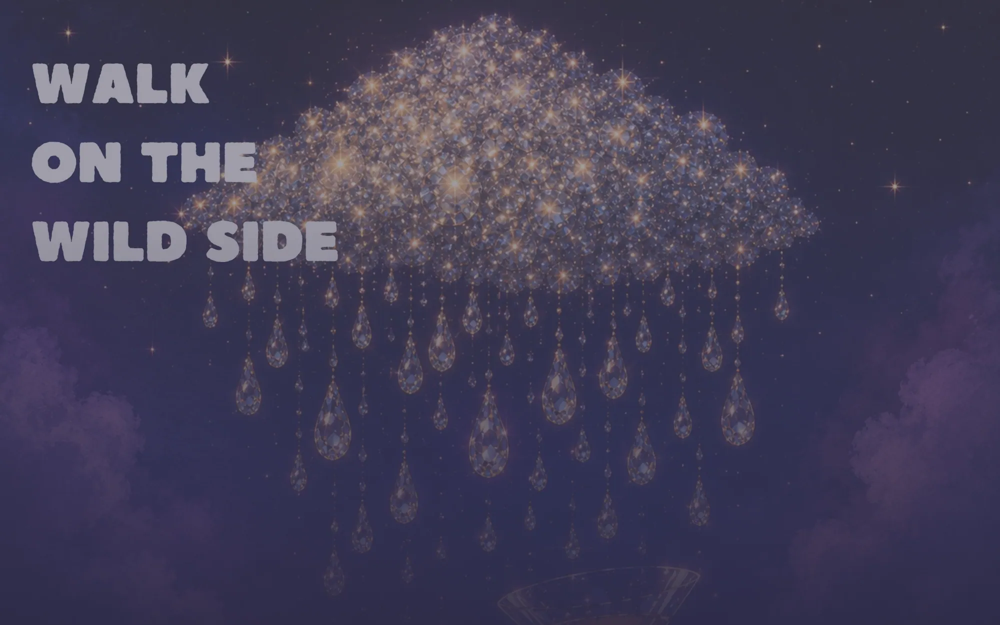

02Späher · Befund
Ausgebucht,aber ohne Adresse.
Culinarium Hannover: Rudi kocht vegetarisch, Momo mixt zu jedem Gang einen Drink und erklärt ihn, an der langen Tafel der Bar Walk on the Wild Side in Linden. Es gibt keine Website, nur ein Instagram-Profil. Hier steht, wie dieser Auftritt dasteht, was fehlt, was die Abende ausmacht und ob es passt. Projektart Auftrag. Jede Angabe mit Quelle, Stand 25. Oktober 2026.
01Das Haus in Kürze
Zwei Köpfe,eine lange Tafel.
Kein Restaurant und kein Hotel: eine Reihe von Abenden, rund drei Doppeltermine im Jahr, ohne eigenen Rechtsträger.
| Angabe | Wert | Quelle |
|---|---|---|
| Format | Vegetarisches 3-Gänge-Menü, 5 Signature Drinks, Cocktail-Tasting mit Schulung zu Fatwashing, Milkwashing und Klärung durch Enzyme | DbYnkdkjrNy, 29.07.2026 |
| Team | Rudolf «Rudi» Napieraj (Küche), Momo (Drinks, Klarname nicht öffentlich), Derya Ivkin | Bio @culinarium_hannover, 25.10.2026 |
| Ort | Walk on the Wild Side, Haasemannstraße 13, 30449 Hannover-Linden | Google Maps, 25.10.2026 |
| Termine | Freitag 19:00 und Samstag 17:00 · zuletzt 27./28.03. und 25./26.09.2026 · nächster nicht angekündigt | DVjkofijp6R, DbYnkdkjrNy |
| Preis | 89,00 EUR (2026) · 2023 noch 59 bis 80 EUR | Beiträge; Kundenprofil Blatt 3 |
| Plätze | 14 pro Abend laut Beiträgen · Tafel der Bar laut Verzeichnissen 8 bis 12 · welche Zahl gilt | Kundenprofil Blatt 3, 4, 5 |
| Seit | Pop-up mit Momo seit 20.05.2023, mit Rudi seit April 2024 | Kundenprofil Blatt 3 |
| Rechtlich | Kein Rechtsträger, kein Impressum, kein Register · culinarium-hannover.de frei | DENIC, 24.10.2026 |
02Wer hinter dem heutigen Auftritt steht
Keine Agentur,nur ein Profil.
Es gibt nichts abzulösen: keine Seite, keinen Baukasten, keinen Vertrag. Der ganze Auftritt läuft über Instagram und eine PayPal-Zahlung nach Nachricht.
- PlattformInstagram (Meta), Konto @culinarium_hannover, vom Team selbst geführt. Wer das Konto besitzt: im Gespräch zu klären.
- Seit wannErster eigener Beitrag 20.05.2023, letzter eigener Beitrag 29.07.2026 (DbYnkdkjrNy).
- Buchung«Tickets ausschließlich per Vorverkauf über PayPal. Schreibt uns hierzu gerne eine Nachricht.» Kein Ticketsystem, keine Warteliste, kein Beleg.
- GestaltungPlakate ohne Nennung, wer sie macht. Herkunft der Illustrationen (Stock, KI, eigene Collage) und Schrift der Wortmarke: offen.
- NutzungsrechteFotos gehören den Fotografen (Irina Voronov, focusonbiz_hannover, Recap 02/2025 ohne Namen). Ein Repost ist keine Web-Lizenz.
Wo wir besser sind
- Eine Adresse, die man weitergeben kann
- Termine, Menü und Preis an einem Ort
- Buchen ohne Nachricht, mit Beleg und Warteliste
- Impressum, Datenschutz, AGB mit Stornoregel
- Bei Google gefunden statt Culinar Herrenhausen
Was dem Haus bleibt
- Das Profil, so wie es ist
- Die Plakate als Reihe, jetzt mit Archiv
- Rudis Schreibweise der Gerichte
- Kein Vertrag, den jemand kündigen muss

So sieht ein Culinarium-Abend aus, wenn ihn jemand fotografiert. Auf Instagram liegt er zwischen zwei Plakaten, ohne Namen und ohne Link.
03Die heutige Seite
Ein Profil,das wie eine Sammlung aussieht.
Eine Website gibt es nicht. Abgelesen ist das Instagram-Profil am 25. Oktober 2026, am Rechner und am Handy, ohne Anmeldung, optionale Cookies abgelehnt.
| Punkt | Stand | Beleg |
|---|---|---|
| Technik | keine Website, nur Instagram | Profil; DENIC 24.10.2026 |
| Profil | «Food Pairing | Schulungen | Events | Consulting» · «CULINARIUM a unique experience» · drei Team-Konten | Profil 25.10.2026 |
| Reichweite | 1.079 Follower, 28 Beiträge, 8 Story-Highlights · zweimal abgelesen (24. und 25.10.) | _qa/spaeher/ig-profil-rechner.txt |
| Link in der Bio | keiner | Profil 25.10.2026 |
| Takt | ein eigener Beitrag alle 3 bis 5 Monate, nur zu Terminen | Kundenprofil Blatt 7 |
| Bilder | Instagram-Fassungen 1440 px, Plakate bis 2014 × 2003 px | _quelle-bilder/ |
| Handy | Bio und erste Beiträge sichtbar, danach Anmeldefenster | _qa/spaeher/ig-profil-handy.jpg |
| Sprachen | nur Deutsch | Beiträge |
| Buchung | Nachricht, dann PayPal-Vorkasse · «nicht rückerstattet» | DbYnkdkjrNy |
| Rechtstexte | Impressum, Datenschutz, AGB, Widerruf: keine | Profil; Kundenprofil Blatt 1 |
| Newsletter, Warteliste, Gutschein | keine | Profil, Beiträge |
| kein Eintrag · die Suche zeigt u. a. Culinar Herrenhausen | Google Maps, 25.10.2026 | |
| Fehler | «Hasemannstrasse», «@rudi_san», «3-Gange», «in vollen Zugen», März-Datum «/25» | DbYnkdkjrNy; Kundenprofil Blatt 5 |
Was der Auftritt gut macht: Die Marke ist fertig. Jedes Plakat seit 2023 folgt demselben System, wechselnde Illustration oben, darunter das warmweisse Band mit der doppelt gerahmten Wortmarke und «A UNiQUE EXPERiENCE BY MOMO X RUDI». Zwei feste Farben, eine Akzentfarbe je Abend. Das Raster sieht aus wie eine Sammlung. Daran misst sich alles, was wir bauen.


04Was fehlt
Was der Gastheute nicht findet.
Die Nachfrage ist da, die Abende sind ausgebucht. Was fehlt, ist alles, was nach dem Plakat kommt.
- Eine AdresseKein Link in der Bio, keine Domain, nichts, was man weitergeben kann.
- Ein BuchungswegNachricht schreiben, PayPal, kein Beleg, keine Warteliste. Wer zu spät kommt, ist weg.
- Ein KalenderTermine stehen nur in Bildunterschriften. Heute ist kein nächster Abend angekündigt.
- RechtstexteKein Impressum, kein Datenschutz, keine AGB, obwohl Geld fliesst und die Stornoregel streng ist.
- GoogleWer «Culinarium Hannover» sucht, findet Culinar Herrenhausen, Bad Nenndorf oder Berlin.
- Das Angebot jenseits der Abende«Schulungen, Events, Consulting» stehen im Profilnamen. Belegt ist nur die Schulung als Teil des Abends.
- Die KöpfeÜber Rudi und Momo gibt es ausserhalb von Instagram keine Zeile.
05Was das Haus ausmacht
Jeder Drinkwird erklärt.
Zwei Leute an einer langen Tafel. Rudi kocht vegetarisch, Momo mixt zu jedem Gang einen Drink und erklärt ihn persönlich, mit Techniken, die in Hannover sonst niemand vorführt.
- Die KücheRudis Gerichte heissen wie ihre Zutaten: «AUBERGINE / KOKOS / LIMETTE / SESAM». Vegetarisch als Standard, im Dezember 2025 einmal mit Ente.
- Die BarFatwashing, Milkwashing, Klärung mit Enzymen. Kein Wettbewerber in Hannover bewirbt das (Kundenprofil Blatt 8).
- Der OrtNachbarschafts-Mixology-Bar in Linden, ehemaliges Fussballlokal, Möbel aus Kirchenbänken, die Tafel auf einer kleinen Empore.
- Der WegVom Pop-up für 59 bis 80 EUR im Jahr 2023 zum ausgebuchten Abend für 89 EUR im Jahr 2026.
- Die PlakateJeder Abend hat sein eigenes Motiv. Die Reihe sammelt sich wie Ausgaben eines Magazins.

Die Menükarte liegt schon auf dem Teller. Profi-Fotos gibt es, nur gehören sie den Fotografen, nicht dem Haus.
06Familie und weitere Häuser
Eine Bar,ein Pop-up.
Drei Namen, kein gemeinsamer Rechtsträger. Die Bar ist die Bühne, Dirty Chicken ist Rudis zweites Projekt. Gebaut hat Robert noch keines davon.
Rudolf Napieraj · Momo · Derya Ivkin
Instagram 1.079 Follower · keine Website

Derya Ivkin laut eigener Bio «Bar Owner» · gegründet 2017 von Elbert/Schindler
Instagram 2.678 Follower · Google 4,8 · keine Website

Rudolf Napieraj
Instagram 297 Follower, 4 Beiträge · keine Website
Was geprüft ist
- Derya Ivkins Bio: «Bar Owner @walkonthewildside_hannover», «Food Pairing @culinarium_hannover» (25.10.2026)
- Rudis Bio verlinkt Culinarium und Dirty Chicken (25.10.2026)
- Bar bei Google: 4,8, ohne Website, +49 163 3909578
- Kein Ordner zu den dreien in Website-Projekte
Was offen bleibt
- Wer die Bar heute betreibt: im Register nicht belegt
- Ob Dirty Chicken mitkommt (Robert bot im Sommer beides an)
- Abgrenzung zum Private Dining der Bar am selben Tisch (bis 12 Personen, 89 EUR)
- Bilder der Bar und von Dirty Chicken: aus deren Profilen, nur zur Zuordnung
07Noten
Kein Eintrag,aber volle Tische.
Abgelesen am 25. Oktober 2026, nur abgelesen. Culinarium selbst hat keine Bewertungen, weil es nirgends eingetragen ist.
| Quelle | Note | Anzahl |
|---|---|---|
| Google, Culinarium | kein Eintrag | – |
| Google, Walk on the Wild Side | 4,8 | nicht angezeigt · 76 laut Restaurant Guru, 24.10.2026 |
| Booking, TripAdvisor | nicht gelistet | – |
| Facebook, Bar | 4,2 laut Restaurant Guru · an der Quelle nicht geprüft | 10 |
| Auszeichnung | Falstaff 89 Punkte 2026 für die Bar laut Drittlisting · an der Quelle nicht geprüft | – |
| Stimmen | @hannover_eats Reel 12/2025 «Werbung | Einladung» · @luisaverfuerth 04/2024 | 5.404 Aufrufe |
08Widersprüche zur Recherche
Was sich seit gesterngeklärt hat.
Die Recherche vom 24. Oktober konnte Instagram und Google Maps nicht öffnen. Heute ging beides, ohne Anmeldung.
- Derya IvkinRecherche: «Rolle in der Bio nicht benannt». Heute in ihrer Bio: «Bar Owner» und «Food Pairing @culinarium_hannover». Eigene Angabe, kein Registerbeleg.
- Dirty ChickenRecherche: «im Web nicht auffindbar». Es gibt das Konto @dirtychicken.hannover, verlinkt aus Rudis Bio.
- GoogleRecherche: nicht prüfbar. Heute: kein Eintrag für Culinarium, die Bar mit Eintrag ohne Website.
- Plätze14 pro Abend laut Beiträgen gegen 8 bis 12 für die Tafel laut Verzeichnissen. Bleibt offen.

09Empfehlung
Passt, als Auftrag. Drei Fragen zuerst.
Robert hat es ausdrücklich gewollt, deshalb gilt der Zielmarkt Schweiz hier nicht. Kleinstes inhabergeführtes Format, keine Kette. Der Auftritt ist viel schwächer als die Sache: eine fertige Marke und ausgebuchte Abende ohne Adresse, ohne Buchung, ohne Impressum. Material ist da, kein Relaunch läuft, die Domain ist frei.
Vor dem Bau klärt Robert im Gespräch: wer Vertragspartner ist und ins Impressum kommt, wem Fotos, Illustrationen und Schrift gehören, und wie Culinarium zur Bar steht. Bis dahin arbeitet die Kette mit dem, was Rudi geschickt hat.